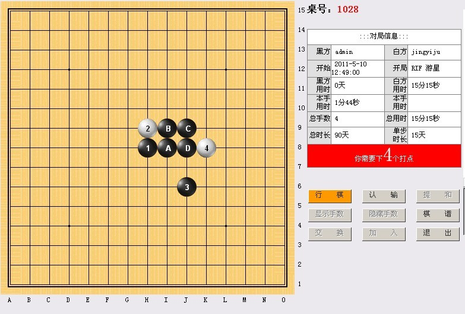
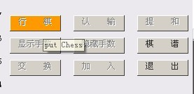
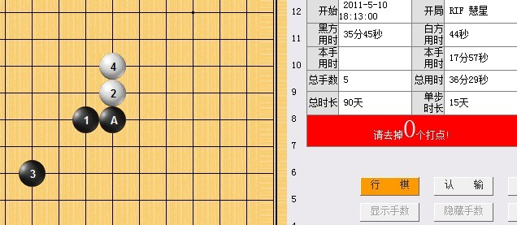
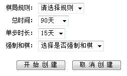
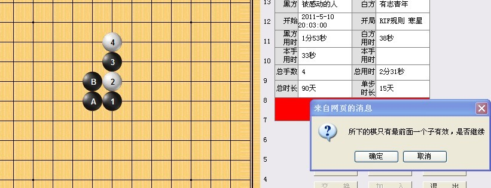
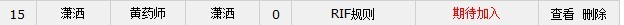

慢棋系统优化汇总贴（提建议送鲜花）
#1 <font color="red">慢棋系统优化汇总贴（提建议送鲜花）</font> 作者：小丸.net 发表时间：2011-5-10 13:09:36
目前爱五子棋慢棋系统已经进入的最后的测试阶段，RIF规则与山口规则已经完成调试成功！

另外，为了满足外国棋手参于这次棋手比赛，系统还增加了双语功能，鼠标移动中文中即有与其对应的英文出现（有志注：有日文没有!）

接下来还有几天需要调试的问题：
1.编排问题！
2.自动判断胜负问题！
3.合并数据库问题（即用爱五子棋的ID登录慢棋系统）
慢棋系统开发组
2011.5.10
［此帖子已被 小丸.net 在 2011-5-10 13:13:40 编辑过］
［此帖子已被 小丸.net 在 2011-5-10 13:14:45 编辑过］
［此帖子已被 小丸.net 在 2011-5-10 13:15:07 编辑过］
［ 黄药师 于 2011-5-10 13:19:58 时奖励此帖[金币加 100 威望加1］
［ 失落刀 于 2011-5-10 16:43:43 时花20金币送鲜花一朵］
［ 失落刀 于 2011-5-10 16:43:50 时花20金币送鲜花一朵］
［ 被感动的人 于 2011-5-10 17:58:07 时花20金币送鲜花一朵］
［此帖子已被 失落刀 在 2011-5-15 13:50:13 编辑过］
［ 茗弈小刀 于 2011-5-15 14:41:41 时奖励此帖[金币加 100 威望加1］
［此帖子已被 失落刀 在 2011-10-19 21:18:36 编辑过］
#2 Re:慢棋系统开发进度汇报 作者：失落刀 发表时间：2011-5-10 16:42:14
辛苦了。
建议不要双语哈，让他们学汉语
期待妖刀规则。
#3 Re:慢棋系统开发进度汇报 作者：有志青年 发表时间：2011-5-10 16:46:24
强烈支持仅中文！#4 Re:慢棋系统开发进度汇报 作者：失落刀 发表时间：2011-5-10 19:18:28
［此帖子已被 小丸.net 在 2011-5-10 19:41:01 编辑过］
#5 Re:慢棋系统开发进度汇报 作者：失落刀 发表时间：2011-5-10 19:24:12

系统提示去掉0个打点，因此我就直接在棋盘点6，没有反应。。。
然后我点A，这个时候A就没有了。
#6 Re:慢棋系统开发进度汇报 作者：失落刀 发表时间：2011-5-10 19:27:16
选择RIF规则时候，界面有选项，仍然可以选择5的打点大于3，选择了3个打点后，后面系统就要求点三个打点。#7 Re:慢棋系统开发进度汇报 作者：失落刀 发表时间：2011-5-10 19:53:15

总时间建议写成个人总时间？不写好像也没关系。
但是建议选项里面有更多的选项，便于下快棋时候的选择。
不知道意义大不大。
单步时长建议设置7、14、21天三个选项。
如果总时间选项里面设置了30分钟、*小时的话，则单步时长也需要相应设置。
“选择是否强制和棋”这8个字可以直接写成不强制。
百手和棋建议文字修改成“百珠满局”？很有文化底蕴哦，
#8 Re:慢棋系统开发进度汇报 作者：失落刀 发表时间：2011-5-10 20:03:36
收集来的问题：
1、验证码有时不显示，需要刷新，可否修复？
2、在对局桌的界面里面能否显示双方积分信息？【已修正，会显示威望与积分】
3、通过爱五子棋进入慢棋能不能改为自动登录进去？
4、在聊天栏打字必须点“提交”才能把字发出去，建议设置成QQ聊天所习惯的快捷键可以不？
5、有的人的聊天栏里面的文字可以自动换行，但有的人的就不能自动换行。
6、建议设置一个刷新按钮。
7、强制和棋的对局是否将信息可以显示出来？
8、建议有打谱功能，不仅对局双方可以打谱，围观的人也可以打谱。
9、我们都是管理员？感觉如此风险过大。建议慢棋管理员1-2个就可以。不然万一比赛对局被误删除，，，
10、系统不会判断5手打点的对成问题。
11、如果一个比赛指定外峡月比赛，建议参赛棋手进入后，棋盘就自动显示了外峡月三个棋子。
12、我选择请求和棋，刷新后，系统说是我的对手请求和棋，我同意，系统就判和了。
我不同意，系统就说不同意，要继续下。但，但是：“轮到”框框里面是空白，没有说轮到谁了？？？
［此帖子已被 失落刀 在 2011-5-10 20:33:18 编辑过］
［此帖子已被 失落刀 在 2011-5-10 20:43:16 编辑过］
［此帖子已被 小丸.net 在 2011-5-11 15:31:18 编辑过］
#9 Re:慢棋系统开发进度汇报 作者：被感动的人 发表时间：2011-5-10 20:07:45
建议开局之后直接进入对局界面，不要刷新。
建议打谱功能设置在功能键里或者去掉这一功能。
建议新建棋局采用可选方式，就是说可以设置自己的棋局等待他人加入，也可以由论坛战组织者统一设置棋局填写对局双方以免出现对局数疏漏，并且此种功能下不允许设置外的人加入对局。
#10 Re:慢棋系统开发进度汇报 作者：被感动的人 发表时间：2011-5-10 20:08:05
建议设置记住密码方式。#11 Re:慢棋系统开发进度汇报 作者：被感动的人 发表时间：2011-5-10 20:13:19
建议旁边的聊天栏可以设置发送时候的键盘和鼠标两种操作方式。#12 Re:Re:慢棋系统开发进度汇报 作者：被感动的人 发表时间：2011-5-10 20:14:33

【有志注：这个问题很吓人的，另确认后，还是返回到列表页吧】
［此帖子已被 有志青年 在 2011-5-10 21:08:07 编辑过］
#13 Re:慢棋系统开发进度汇报 作者：有志青年 发表时间：2011-5-10 20:23:45
现在要做的是，逆刃说的问题一：选择开局那么就自动摆放三个子，否则，我选择花月，却下成蒲月咋办？
[有志注：这个已经解决，比我想象的好]
花影提出的问题：如果设置两打点为1咋办？
[有志注：这是个问题，n=1的情况很少，是否可以回避掉]
另就是增加自动编排对阵表
[有志注：这是每次比赛必备的]
［此帖子已被 有志青年 在 2011-5-10 20:45:06 编辑过］
［此帖子已被 小丸.net 在 2011-5-10 22:19:38 编辑过］
#14 Re:慢棋系统开发进度汇报 作者：逆刃 发表时间：2011-5-10 20:33:06
我这里的问题：
提和键：只有在自己落子后短时间可用，刷新后就不能用了。建议改成自己落子后对方落子前都可用；
显示和隐藏手数键：其作用并不大，建议显示手数，同时取消这两个键；
对局信息的显示：建议在对局中显示强制和棋的信息，比如100手或120手强制和棋，因为后加入的人并不知道强制和棋的信息；
rif开局测试中发现选择开局后没有自动落子，最好是选择完开局后在棋盘上显示棋子；
建议在大厅中增加一个返回爱五子棋网的超链接；
能否考虑支持多窗口打开？这样就需要在对局里面增加一个“返回大厅”的键，单纯的退出只能一个棋局一个棋局的看。
［ 有志青年 于 2011-5-10 20:40:19 时花20金币送鲜花一朵］
[有志注：完全同意逆刃的以上观点！非常到位]
［此帖子已被 有志青年 在 2011-5-10 20:46:45 编辑过］
#15 Re:慢棋系统开发进度汇报 作者：逆刃 发表时间：2011-5-10 20:33:35
花影(463148561) 20:27:48
收集来的问题：
1、验证码有时不显示，需要刷新，可否修复？
[有志注：问题3解决问题1]
2、在对局桌的界面里面能否显示双方积分信息？
【[有志注：这个可以有】
3、通过爱五子棋进入慢棋能不能改为自动登录进去？
4、在聊天栏打字必须点“提交”才能把字发出去，建议设置成QQ聊天所习惯的快捷键可以不？
[有志注：这个可以后期改，不是必备]
5、有的人的聊天栏里面的文字可以自动换行，但有的人的就不能自动换行。
[有志注：已经解决]
6、建议设置一个刷新按钮。
[有志注：建议提交棋局后返回对局列表，因为不是即时对局，所以刷新按钮不是必备]
7、强制和棋的对局是否将信息可以显示出来？
[有志注：这个要]
8、建议有打谱功能，不仅对局双方可以打谱，围观的人也可以打谱。
[有志注：这个现在就有吧，谁都可以在局面上打谱呀]
9、我们都是管理员？感觉如此风险过大。建议慢棋管理员1-2个就可以。不然万一比赛对局被误删除，，，
[有志注：目前只有四个人可以删除]
10、系统不会判断5手打点的对成问题。
[有志注：所有局面判断的目前都没有做吧]
［此帖子已被 有志青年 在 2011-5-10 20:43:18 编辑过］
#16 Re:慢棋系统开发进度汇报 作者：失落刀 发表时间：2011-5-10 20:52:36

黑白双方已经有了，但仍然红色显示“期待加入”
【有志注：这个应该是等待开局】
另提和问题需要解决，小丸明白的。
［此帖子已被 有志青年 在 2011-5-10 21:00:16 编辑过］
#17 Re:慢棋系统开发进度汇报 作者：失落刀 发表时间：2011-5-10 20:57:03
谁都可以发表情
强大功能推荐（建议设置成收费金币20发一个表情）
【有志注：同意，花钱买图片，凡是聊天里有img的代码了，就扣钞票】
［此帖子已被 有志青年 在 2011-5-10 20:59:07 编辑过］
#18 Re:慢棋系统开发进度汇报 作者：有志青年 发表时间：2011-5-10 21:04:01
对局时的“退出”改成“返回”比较好。
已经有人加入了，但还没有开局，此时不应该现实“等待加入”而是“等待假先方开局”
［此帖子已被 有志青年 在 2011-5-10 21:16:14 编辑过］
#19 Re:慢棋系统开发进度汇报 作者：失落刀 发表时间：2011-5-10 21:12:17
妖刀设置了10个。。。
没有结论的是8个，
该设置8个？还是如同RIF一样，虽然有地毯的，仍然设置26个？
建议就26个吧，
我选择开局后，又想悔棋，可以不？
目的是检查所有的妖刀名字和棋盘上开的局面对应的上不。
［此帖子已被 失落刀 在 2011-5-10 21:16:17 编辑过］
#20 Re:慢棋系统开发进度汇报 作者：失落刀 发表时间：2011-5-10 21:19:31
QNMJ~LWVV.gif)
是不是上的人多了，打开比较慢
花影花影花影(463148561) 21:21:15
原先浙江教室就是，人多了后，就反映慢、卡了的，
［此帖子已被 失落刀 在 2011-5-10 21:22:24 编辑过］
#21 Re:慢棋系统开发进度汇报 作者：失落刀 发表时间：2011-5-10 21:34:05
 怎么样才可以自己和自己下？
怎么样才可以自己和自己下？［此帖子已被 小丸.net 在 2011-5-11 15:30:25 编辑过］
#22 Re:慢棋系统开发进度汇报 作者：有志青年 发表时间：2011-5-11 11:49:09
留言可以不输入内容直接提交。
已修正！【丸子注】
［此帖子已被 小丸.net 在 2011-5-11 15:28:32 编辑过］
#23 Re:慢棋系统开发进度汇报 作者：失落刀 发表时间：2011-5-15 13:46:21
1、选择和棋规则后，棋桌内信息没有显示出来，
2、选择120手和棋规则，也没有显示，
3、我一个人在棋桌，没有对手，但是已经开始给我计时了
小丸.net：这个会在提交后重新显示的。
4、对局信息里面能不能提供5A=?/5B=?5C=?
5、花影：和棋规则？奇怪，里面可以选择100或者120的呀，如果选择和棋规则，是什么意思？
小丸.net：这个是让人选下面的。
花影：如果我直接选择和棋规则，系统也允许的，
6/linlsk:要是我想和小雨下，可被被别人应战上怎么办
花影:可以邀请小雨下
linlsk:这样啊，怎么邀请下
花影:哦，没有邀请选项，，
#24 Re:慢棋系统开发进度汇报 作者：失落刀 发表时间：2011-5-15 13:49:31
1、单步时长无法改变，默认的15天。
2、黑方求和，，，我白方进去之后找不到同意的选择....同时系统依然显示轮到黑方走棋！！！也没有不同意的选择。。。
3、比如说我要和楼上的小鱼下棋，然后我建立了，要是被别人应战了怎么办呢？
4、要是能解决棋子落子后自动更新就更完善了
5、有没有可能增加联棋的功能呢？
#25 Re:慢棋系统开发进度汇报（BUG汇总） 作者：失落刀 发表时间：2011-5-15 13:51:03
6、设置一个慢棋赌金币功能。对局双方可以互相赌金币。系统抽成。
#26 Re:Re:慢棋系统开发进度汇报（BUG汇总） 作者：有志青年 发表时间：2011-5-15 14:50:03
引用：
原文由 失落刀 发表于 2011-5-15 13:51:03 :
6、设置一个慢棋赌金币功能。
对局双方可以互相赌金币。系统抽成。
我在想，如果索性做成有奖竞猜。
如：甲和乙对局
abcde五人来旁观，ab两人认为甲会胜，cde则认为乙会胜，每人给了20个金币。合计共100个金币。
比赛六个子之前都可以竞猜。对局表甲和乙的后面用数字来标注支持他的人数。
系统记录本场对局参与竞猜的人员名单，比赛结束后，根据最终结果，系统对总收入的80%，也就是80个金币给竞猜正确的人平分。
#27 Re:慢棋系统开发进度汇报（BUG汇总） 作者：小丸.net 发表时间：2011-5-15 16:20:07
楼上的，。。这个可以有。
［ 失落刀 于 2011-5-15 17:23:51 时花20金币送鲜花一朵］
#28 Re:慢棋系统开发进度汇报（BUG汇总） 作者：有志青年 发表时间：2011-5-15 16:44:13
如果再合理一些：
被支持者（下棋者）每位支持者贡献2个金币，直接到账，不需要等比赛结束，支持他的人越多，他的收入越多。
剩下的金币总和的20%系统回收，80%竞猜正确者平分（四舍五入到整数）
这里有三个调节控制阀：竞猜最小投注、被支持者单笔收入、系统回收比例
#29 Re:慢棋系统开发进度汇报（BUG汇总） 作者：小丸.net 发表时间：2011-5-15 17:26:00
也不要20个金币了，我可以一次性为某个棋手砸多点，比如说100W，投注数，单笔收入，系统回收收入等都以百分比来做啊。
#30 Re:慢棋系统开发进度汇报（BUG汇总） 作者：失落刀 发表时间：2011-5-15 17:32:51
对局双方可以互相赌金币。
这个功能先实现吧。
#31 Re:慢棋系统开发进度汇报（BUG汇总） 作者：失落刀 发表时间：2011-5-15 23:42:25
现在的对局不是正式比赛对局，是练习。
新建对局似乎不能执白啊。。答复：确实的，以后改。
和棋选项里 第一项和棋规则与第四项不强制区别在哪？
答复：第一项和棋规则没有意义，反正应是选择100或者120和棋；不强制就是说可以下到225.
对了，好像应该设置一个pass按钮。
#32 Re:慢棋系统开发进度汇报（BUG汇总） 作者：失落刀 发表时间：2011-5-16 22:44:49
需要一个悔棋按钮。
这个暂时不考虑。我们崇尚落子无悔。
［此帖子已被 小丸.net 在 2011-10-19 21:30:25 编辑过］
#33 Re:慢棋系统优化汇总贴（提建议送鲜花） 作者：失落刀 发表时间：2011-10-19 21:22:17
需要每天进步一点点，#34 Re:慢棋系统优化汇总贴（提建议送鲜花） 作者：失落刀 发表时间：2011-10-19 21:31:59
强制和棋里面的下拉菜单选项文字不专业，不爽不强制
百珠和棋
百二十珠和棋
建议文字如此，顺序如此。
#35 Re:慢棋系统优化汇总贴（提建议送鲜花） 作者：失落刀 发表时间：2011-10-19 21:33:20
修改。